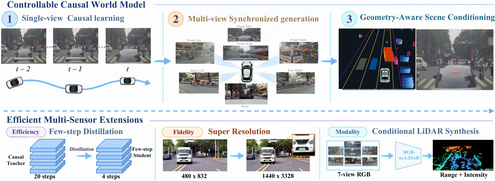
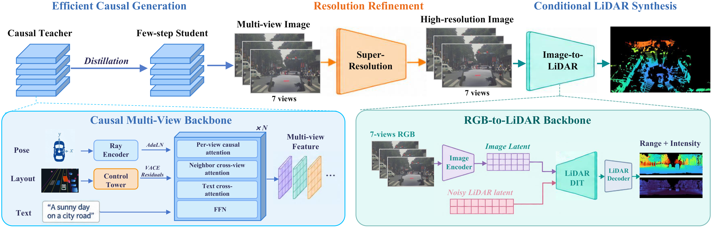

HelloWorld
From Pixels to Practice,
Unlocking Generative World Model for Autonomous Driving
- Multimodal Video + LiDAR
- Multi-view
- Strong Pose Control
- Layout Control 3D Boxes + Maps + Traffic Lights
- Causal DiT
HelloWorld as a Data Generalizer
HelloWorld as a Closed-Loop Simulator
Model Overview
HelloWorld combines controllable multi-view video generation, few-step inference, super-resolution, and RGB-conditioned LiDAR synthesis in a unified driving world model system.


Pose Control
These demos prioritize adherence to the prescribed pose trajectory, even when it leads to collisions with barriers or off-road motion. Simulating such extreme trajectories supports closed-loop stress testing and the analysis of driving-policy failure modes.
Turn left · 7 views · 81 frames · 10 fps · 8.1 s. Paired with Straight and Turn right using the same scene and initial frame. Green: projected future pose trajectory.
Single-view pose · 29 frames · Table 3
| Method | Rot (°) ↓ | Trans ↓ | Trans* (m) ↓ |
|---|---|---|---|
| HY-WorldPlay | 8.6305 | 1.0669 | – |
| Lingbot World 2.0 | 3.2310 | 0.2853 | – |
| HelloWorld | 2.0620 | 0.2570 | 0.6830 |
Trans uses Sim(3) alignment; Trans* is metric-scale translation error, reported only for HelloWorld on real-world on-road cases. These benchmarks are separate from the seven-view demos. Report · Table 3 · p. 18
Single-view pose · 100 frames · Table 4
| Method | Rot (°) ↓ | Trans ↓ | Trans* (m) ↓ |
|---|---|---|---|
| HY-WorldPlay | 15.0835 | 5.4504 | – |
| Lingbot World 2.0 | 5.4169 | 1.4988 | – |
| HelloWorld | 2.7056 | 1.3997 | 5.5857 |
Trans uses Sim(3) alignment; Trans* is metric-scale translation error, reported only for HelloWorld on real-world on-road cases. These benchmarks are separate from the seven-view demos. Report · Table 4 · p. 18
Single-view perceptual quality (VBench) · 29 frames · Table 5
| Method | Subject | Background | Motion | Dynamic | Aesthetic | Imaging | I2V subject | I2V background | Mean |
|---|---|---|---|---|---|---|---|---|---|
| HY-WorldPlay | 0.9669 | 0.9543 | 0.9933 | 0.2800 | 0.4762 | 0.5774 | 0.9829 | 0.9847 | 0.7770 |
| Lingbot World 2.0 | 0.9150 | 0.9424 | 0.9760 | 0.8900 | 0.4819 | 0.5933 | 0.9623 | 0.9676 | 0.8411 |
| HelloWorld | 0.9148 | 0.9364 | 0.9807 | 0.9200 | 0.4521 | 0.5392 | 0.9563 | 0.9632 | 0.8328 |
Mean is the unweighted mean of the eight raw scores; it is not the full VBench benchmark score. Report · Table 5 · p. 19
Single-view perceptual quality (VBench) · 100 frames · Table 6
| Method | Subject | Background | Motion | Dynamic | Aesthetic | Imaging | I2V subject | I2V background | Mean |
|---|---|---|---|---|---|---|---|---|---|
| HY-WorldPlay | 0.9354 | 0.9325 | 0.9951 | 0.1400 | 0.4685 | 0.5584 | 0.9844 | 0.9855 | 0.7500 |
| Lingbot World 2.0 | 0.8841 | 0.9270 | 0.9814 | 0.9900 | 0.4489 | 0.5816 | 0.9573 | 0.9624 | 0.8416 |
| HelloWorld | 0.8876 | 0.9288 | 0.9842 | 0.9200 | 0.4453 | 0.4976 | 0.9571 | 0.9627 | 0.8229 |
Mean is the unweighted mean of the eight raw scores; it is not the full VBench benchmark score. Report · Table 6 · p. 19
Multi-view pose control · Table 7
| Setting | Rot (°) ↓ | Trans ↓ | Trans* (m) ↓ |
|---|---|---|---|
| Cosmos Transfer 2.5 (w/ ff) | 5.534 | 1.880 | 8.886 |
| Stage 2 (w/ ff) | 3.315 | 1.525 | 4.486 |
| Stage 2 (w/o ff) | 5.163 | 2.189 | 7.972 |
| Stage 3 (w/ ff) | 2.027 | 1.352 | 4.904 |
| Stage 3 (w/o ff) | 3.334 | 1.844 | 8.485 |
Stage 2 uses pose conditioning; Stage 3 adds scene controls. w/ ff: with first-frame conditioning; w/o ff: without it. Trans* is in meters. Report · Table 7 · p. 20
Multi-view cross-camera consistency · Table 8
| Setting | CSE (px) ↓ | ΔCSE (px) ↓ |
|---|---|---|
| GT video | 1.730 | 0.000 |
| Cosmos Transfer 2.5 (w/ ff) | 6.549 | +4.819 |
| Stage 2 (w/ ff) | 6.192 | +4.462 |
| Stage 2 (w/o ff) | 7.509 | +5.779 |
| Stage 3 (w/ ff) | 4.180 | +2.450 |
| Stage 3 (w/o ff) | 4.892 | +3.162 |
ΔCSE is measured relative to GT video. CSE measures epipolar agreement, not complete 3D consistency. Report · Table 8 · p. 20
Multi-view perceptual quality (VBench) · Table 9
| Setting | Subject | Background | Motion | Dynamic | Aesthetic | Imaging | Mean |
|---|---|---|---|---|---|---|---|
| Cosmos Transfer 2.5 (w/ ff) | 0.8916 | 0.9376 | 0.9878 | 0.9555 | 0.4366 | 0.4239 | 0.7722 |
| Stage 2 (w/ ff) | 0.8999 | 0.9324 | 0.9843 | 0.9800 | 0.4374 | 0.4953 | 0.7882 |
| Stage 2 (w/o ff) | 0.8716 | 0.9199 | 0.9822 | 0.9700 | 0.4466 | 0.4844 | 0.7791 |
| Stage 3 (w/ ff) | 0.9089 | 0.9462 | 0.9876 | 0.9500 | 0.4138 | 0.4456 | 0.7754 |
| Stage 3 (w/o ff) | 0.9111 | 0.9472 | 0.9788 | 0.9700 | 0.4259 | 0.5074 | 0.7901 |
Mean is the unweighted mean of six raw scores, including dynamic degree. w/ ff and w/o ff denote first-frame conditioning. Report · Table 9 · p. 21
nuScenes driving generation · short horizon · Table 10
| Method | AR | Multi-view | Video | DSF | FID ↓ | FVD ↓ |
|---|---|---|---|---|---|---|
| DrivingGPT | ✗ | ✗ | ✓ | ✓ | 12.78 | 142.61 |
| DrivingWorld | ✗ | ✗ | ✓ | ✓ | 7.40 | 90.90 |
| Vista | ✗ | ✗ | ✓ | ✓ | 6.90 | 89.40 |
| Epona | ✗ | ✗ | ✓ | ✓ | 7.50 | 82.80 |
| BEVControl | ✗ | ✓ | ✗ | ✓ | 24.85 | – |
| BEVGen | ✗ | ✓ | ✗ | ✓ | 25.54 | – |
| MagicDrive | ✗ | ✓ | ✗ | ✓ | 16.20 | – |
| UniScene | ✗ | ✓ | ✓ | ✗ | 6.45 | 71.94 |
| DiST-4D | ✗ | ✓ | ✓ | ✗ | 7.40 | 25.55 |
| OmniNWM | ✗ | ✓ | ✓ | ✗ | 5.45 | 23.63 |
| MagicDrive | ✗ | ✓ | ✓ | ✓ | 18.75 | 218.12 |
| GenAD | ✗ | ✓ | ✓ | ✓ | 15.40 | 184.00 |
| Panacea | ✗ | ✓ | ✓ | ✓ | 16.96 | 139.00 |
| Drive-WM | ✗ | ✓ | ✓ | ✓ | 15.80 | 122.70 |
| DriveDreamer-2 | ✗ | ✓ | ✓ | ✓ | 25.00 | 105.10 |
| FAR-Drive | ✓ | ✓ | ✓ | ✓ | 11.92 | 82.78 |
| HelloWorld (Ours) | ✓ | ✓ | ✓ | ✓ | 7.75 | 41.08 |
All short-horizon rows from Table 10. AR: autoregressive; DSF: dense-supervision-free. Image-only methods have no FVD. The Video column distinguishes the two MagicDrive settings. These are benchmark results, not scores for the displayed demos. Report · Table 10 · p. 21
Layout Editing
Explore object insertion, removal, and trajectory editing through bird’s-eye-view animations and seven-view generated videos with projected lanes and boxes. A recorded-layout following reconstruction is included for reference.
Edit the lead vehicle trajectory so it brakes and stops in the lane, then inspect the seven-view generated result. 4K · 30 fps · 23.3 s.
RGB-to-LiDAR Generation
The model generates LiDAR conditioned on seven-view RGB observations. The left panel previews the front-wide conditioning view, while the right shows the corresponding generated point cloud over time.
RGB video
Front wide camera
LiDAR point cloud
Distance color · drag to rotate
Front-wide RGB preview beside the generated cloud · 63 frames, 10 fps, 6.3 s. Colors encode sensor distance on a 5–28 m scale, with values outside this interval clamped to the endpoint colors. Drag to rotate, scroll to zoom. All finite returns are drawn; point count varies by frame and case. Download sunset sample PLY ↗
Full-panorama RGB-to-LiDAR generation · Table 17
| Metric | Generator | + Single-frame RRN | + Temporal RRN |
|---|---|---|---|
| Range MAE (m) ↓ | 2.2797 | 2.2532 | 2.2194 |
| Chamfer Distance (m) ↓ | 1.0738 | 1.1038 | 1.0920 |
| Edge Pred→GT (m) ↓ | 0.8814 | 0.8339 | 0.7990 |
| Ray-Align ↓ | 0.4366 | 0.3238 | 0.2822 |
| Static-Align ↑ | 0.6741 | 0.7081 | 0.8310 |
100 clips (2,900 frames), 35 sampling steps. All arms reuse the same saved generator outputs; RRN does not rerun the DiT. Static-Align uses shared reference-ICP transforms. Alignment scores are fractions. The scoring region, MAE validity support, and point filtering differ from Table 15, so values should not be compared directly across the two tables. These are not per-demo scores. Report · Table 17 · p. 30
LiDAR comparison · common three-camera region · Table 15
| Metric | Cosmos1 | Ours | + Temporal RRN |
|---|---|---|---|
| Range MAE (m) ↓ | 6.1724 | 2.2199 | 2.1629 |
| Chamfer Distance (m) ↓ | 2.5709 | 1.0134 | 1.0426 |
| Edge Pred→GT (m) ↓ | 1.5802 | 0.7976 | 0.7115 |
| Ray-Align ↓ | 0.3776 | 0.4245 | 0.2757 |
| Static-Align ↑ | 0.4503 | 0.6928 | 0.8463 |
100 clips, frames 0–28. All methods share the GT-derived output scoring region; MAE uses pixels valid in all three predictions (82.7671% of regional valid GT). HelloWorld uses seven-camera video input and Cosmos1 uses three cameras per frame. Equal scoring regions do not equalize input information. Static-Align uses shared reference-ICP transforms. Alignment scores are fractions. Report · Table 15 · p. 29
LiDAR VAE reconstruction · Table 16
| Metric | VAE | + Single-frame RRN | + Temporal RRN |
|---|---|---|---|
| Range MAE (m) ↓ | 0.3981 | 0.3839 | 0.3775 |
| Chamfer Distance (m) ↓ | 0.3978 | 0.3815 | 0.3695 |
| Edge Pred→GT (m) ↓ | 0.2997 | 0.2331 | 0.2106 |
| Ray-Align ↓ | 0.2967 | 0.2610 | 0.2589 |
| Static-Align ↑ | 0.8215 | 0.8510 | 0.8974 |
| Warp Chamfer (m) ↓ | 0.4668 | 0.4422 | 0.3668 |
100 clips (2,900 frames). Reconstruction of recorded LiDAR, not RGB-conditioned generation. Range MAE uses common-valid returns; temporal metrics use recorded poses. Alignment scores are fractions. Report · Table 16 · p. 29
Few-Step Distillation
Compare the 20-step teacher on the left with the 4-step DMD student on the right. Shared playback controls align the two sequences for visual comparison of the few-step results.
Teacher 20 steps
DMD 4 steps
Left turn · Teacher 20 steps (left) / DMD 4 steps (right) · 7 views each · 10 fps · 6.1 s. Synchronized playback.
Distillation · pose control · Table 11
| Setting | Rot (°) ↓ | Trans ↓ | Trans* (m) ↓ |
|---|---|---|---|
| Baseline (w/ ff) | 2.027 | 1.352 | 4.904 |
| Baseline (w/o ff) | 3.334 | 1.844 | 8.485 |
| dCM (w/ ff) | 2.568 | 1.263 | 2.862 |
| dCM (w/o ff) | 4.619 | 2.907 | 5.311 |
| DMD (w/ ff) | 1.661 | 0.688 | 1.885 |
| DMD (w/o ff) | 2.311 | 1.034 | 3.193 |
Baseline is the RF teacher; dCM and DMD are distilled students. w/ ff and w/o ff denote first-frame conditioning. Evaluation uses a frozen 100-clip set of 100-frame videos, separate from the displayed demos. Report · Table 11 · p. 27
Distillation · cross-camera consistency · Table 12
| Setting | CSE (px) ↓ | ΔCSE (px) ↓ |
|---|---|---|
| GT video | 1.730 | 0.000 |
| Baseline (w/ ff) | 4.180 | +2.450 |
| Baseline (w/o ff) | 4.892 | +3.162 |
| dCM (w/ ff) | 5.201 | +3.471 |
| dCM (w/o ff) | 6.399 | +4.669 |
| DMD (w/ ff) | 3.510 | +1.780 |
| DMD (w/o ff) | 4.223 | +2.493 |
CSE uses all seven cameras. ΔCSE is relative to GT video (1.730 px); lower is better. Report · Table 12 · p. 27
Distillation · perceptual quality (VBench) · Table 13
| Setting | Subject | Background | Motion | Dynamic | Aesthetic | Imaging | Mean |
|---|---|---|---|---|---|---|---|
| Baseline (w/ ff) | 0.9089 | 0.9462 | 0.9876 | 0.9500 | 0.4138 | 0.4456 | 0.7754 |
| Baseline (w/o ff) | 0.9111 | 0.9472 | 0.9788 | 0.9700 | 0.4259 | 0.5074 | 0.7901 |
| dCM (w/ ff) | 0.8961 | 0.9409 | 0.9855 | 0.8800 | 0.4176 | 0.4281 | 0.7580 |
| dCM (w/o ff) | 0.9051 | 0.9469 | 0.9866 | 0.7600 | 0.4086 | 0.3824 | 0.7316 |
| DMD (w/ ff) | 0.9029 | 0.9430 | 0.9829 | 0.9900 | 0.4210 | 0.5039 | 0.7906 |
| DMD (w/o ff) | 0.9209 | 0.9488 | 0.9826 | 1.0000 | 0.4171 | 0.4935 | 0.7938 |
VBench is evaluated on the front-wide camera. Mean summarizes six raw scores, including dynamic degree; perceptual improvements vary by metric and initialization. Report · Table 13 · p. 27
Distillation · inference cost · Table 14
| Phase | Teacher | DMD student | T/S |
|---|---|---|---|
| Text encode (s) | 2.5 | 2.5 | 1.0× |
| VAE encode RGB (s) | 6.7 | 7.1 | 0.95× |
| VAE encode control (s) | 13.6 | 13.6 | 1.00× |
| VAE decode (s) | 11.9 | 11.9 | 1.00× |
| DiT prefix (s) | 1.1 | 1.7 | 0.68× |
| DiT ODE (s) | 305.3 | 30.8 | 9.91× |
| DiT KV refresh (s) | 12.1 | 6.0 | 2.02× |
| Cache flush (s) | 3.7 | 2.3 | – |
| Sampling wall (s) | 357.7 | 77.8 | 4.60× |
| Video write (s) | 68.1 | 64.5 | – |
| End-to-end (s) | 426.7 | 143.2 | 2.98× |
| Peak allocated (GiB) | 61.6 | 61.9 | – |
| nvidia-smi peak (GiB) | 73.9 | 73.3 | – |
Teacher: 20 steps, CFG=3; DMD: 4 steps, CFG=1. Measured on eleven 720p clips (1280 × 720, 61 frames, 10 fps, with first-frame conditioning) using 8 GPUs and context-parallel size 8; the first warmup clip is excluded from the means. Reported speedups: DiT ODE 9.91×, sampling 4.60×, end-to-end 2.98×. T/S is teacher/student; ratios follow the report, including rounding. These are inference costs, not browser playback latency. Report · Table 14 · p. 28
Environment Control
Weather and lighting conditions guide the appearance of the generated driving scene. Compare seven-view results under rain, snow, fog, and different times of day.
Special-Scenario Generation
Targeted scene descriptions guide the generation of scenarios such as road construction, pedestrian crossings, and dense traffic. Each example presents the scene across seven camera views.
A road construction zone with excavators, exposed ground, and red-and-white barriers around the driving path.
Long-Horizon Generation
Autoregressive generation extends driving sequences using previously generated context. These examples allow inspection of scene consistency and motion continuity over longer rollouts.
Following traffic along an urban road, with changing roadside scenery and vehicles ahead.
nuScenes driving generation · long horizon · Table 10
| Method | FID ↓ | FVD ↓ |
|---|---|---|
| MagicDrive-V2 | 20.91 | 94.84 |
| HorizonDrive | 13.82 | 92.99 |
| HelloWorld (Ours) | 17.81 | 88.10 |
All long-horizon rows from Table 10. Short- and long-horizon scores use separate evaluations and should not be directly ranked across horizons. These scores are not measured on the individual demos above. Report · Table 10 · p. 21